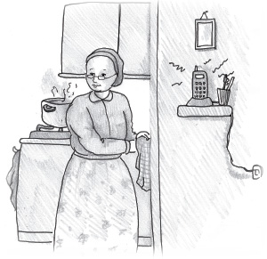

There Is No Need for Surgery
The story of an extraordinary recovery…

The frightened voice on the line was jarring. The quick breaths that she could hear made her tremble. “Ima fell.”
“What?! How? What happened? How is she? Where is she?” shouted Chana. Her pulse raced and she felt like she was choking.
“Hurry over to the hospital,” said her sister curtly.
At the hospital, her mother underwent many tests. The doctors’ reports were not at all positive. “Your mother broke all the bones in her face as the result of her fall. Now she needs four operations.”
The family was devastated to hear this news, but as Chassidim of the Rebbe they knew to whom to turn first – the Rebbe. They quickly called the Rebbe’s office and spoke with his secretary, Rabbi Groner. R’ Groner wrote down the name of the patient and added that the doctors said she needed four operations. Then he brought the note to the Rebbe’s room.
The Rebbe looked at the note for a few moments and then asked R’ Groner, “Is that what the doctors said?”
R’ Groner spoke with the doctor by phone and then reported back to the Rebbe, “I spoke to the doctor and that is what he said.”
“If so,” said the Rebbe, “I will go to the Ohel tomorrow. Although I had not planned on going to the Ohel tomorrow, if this is the situation I will make all the necessary preparations and go.”
Remember, a trip to the Ohel is not simple and easy. The Rebbe did not eat that day and only drank tea in the morning. And yet, the Rebbe decided to make the effort to go to the Ohel for sake of this woman.
The next day, the Rebbe went to the Ohel and spent many hours there. He returned to 770 late and asked R’ Groner, “Ask the doctor how the woman is.”
R’ Groner went to the office and called the doctor, despite the late hour. “How is the woman? Was there any improvement?” he asked.
“We did additional tests today. Now it looks as though three operations will be enough,” said the doctor, sounding a bit more optimistic.
R’ Groner quickly relayed the news of the improvement to the Rebbe.
“Three operations are still necessary?” asked the Rebbe.
“That is what the doctor said.”
“If so, I will go to the Ohel tomorrow too,” said the Rebbe.
The next day, the Rebbe made his preparations, fasted, and devoted many hours to traveling to the Ohel and praying there for the recovery of the woman.
R’ Groner assumed that when the Rebbe would return he would ask again about how the woman was doing, So he did not wait for the Rebbe to ask him to call the doctor but did so on his own.
The phone rang in the doctor’s office. He recognized R’ Groner’s voice instantly. The doctor knew of the Rebbe’s greatness, and since the Rebbe was taking a personal interest in this patient’s welfare, he also put more effort into her care.
“How is the patient today? Was there any improvement?” asked R’ Groner.
The doctor examined his papers and the test results and said, “Yes. We did many tests today and reassessed her situation and it looks as though two operations will suffice.”
When the Rebbe returned from the Ohel, he asked how the woman was doing. “The doctor said that additional tests were done and that two operations will be sufficient,” said R’ Groner.
“Two operations are still necessary?” asked the Rebbe. “Then I will go to the Ohel tomorrow.”
The same thing repeated itself. The Rebbe fasted, he spent hours at the Ohel and in the going and coming, and he returned late. This time too, R’ Groner had already called the doctor to inquire about the woman. The doctor’s answer was, “One operation will be enough.”
When the Rebbe returned from the Ohel, R’ Groner was happy to report the good news. But the Rebbe wasn’t fully satisfied. “She still needs an operation? Then I will go to the Ohel tomorrow too.”
The Rebbe went to the Ohel for the fourth time despite the effort this entailed. He returned late to 770 and asked R’ Groner about the woman.
R’ Groner had already spoken to the doctor so he would have an answer for the Rebbe. This time, he was told, her condition had improved and the most recent tests showed that there was no need for surgery at all. Instead of surgery, they could put the bones together with pins. Thus, thanks to the many prayers of the Rebbe, the woman recovered without surgery.
What enormous Ahavas Yisroel the Rebbe has for every Jew! His time is precious, and yet he devoted many hours to making the trip to the Ohel. Sometimes, the Rebbe returned at nine or even twelve o’clock at night. And when he went to the Ohel he would stand there for hours while fasting.
In this case, he went four times, four days in a row! That was four days of fasting, four days of standing for hours at the Ohel. And why? So that this woman would not have to endure operations. This is the Rosh B’nei Yisroel who takes care of every Jew.
Beis Moshiach (staff). "There Is No Need for Surgery." Beis Moshiach, no. 913 (January 30, 2014).